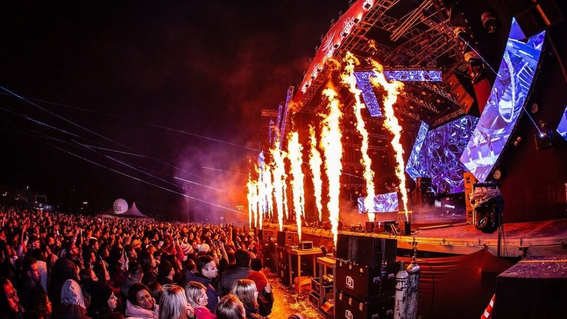

Sobre o Evento
A Festa Nacional do Pinhão, realizada anualmente na histórica cidade da Lapa (PR), é um dos eventos mais emblemáticos do Paraná, unindo o melhor da cultura rural e urbana. Durante os meses de maio e junho, a cidade se transforma em um grande palco de celebração, destacando o pinhão, semente típica da araucária e símbolo da região, em uma programação repleta de sabores, música, arte e tradição.
Atrações Principais
- Gastronomia com pratos à base de pinhão
- Apresentações culturais e shows
- Feira de artesanato local
- Demonstrações de técnicas extrativistas sustentáveis
Galeria
